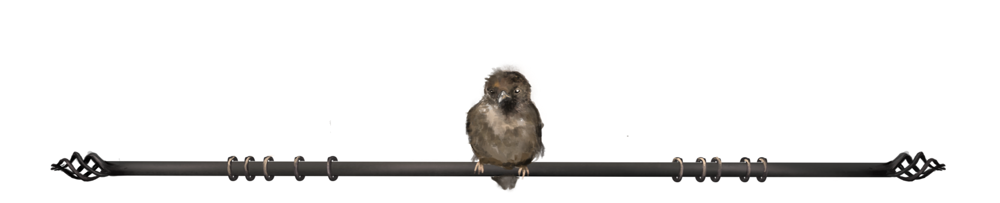
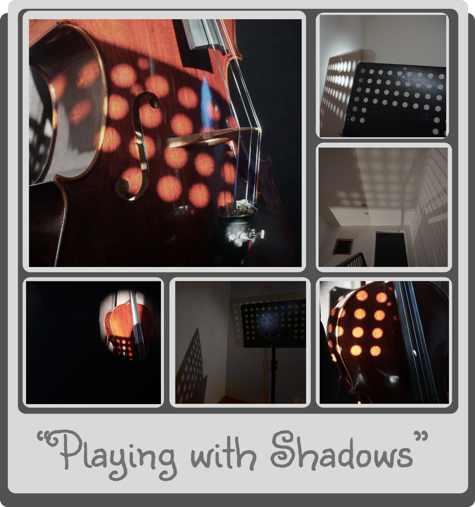
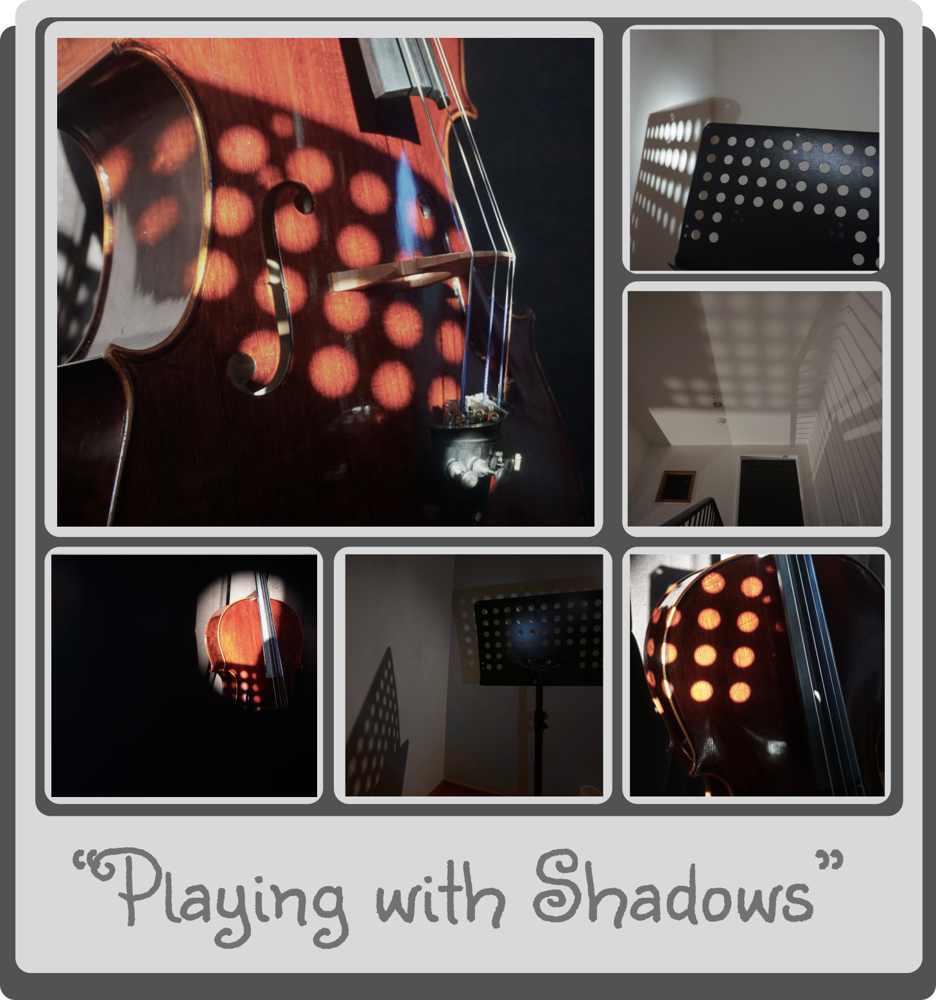
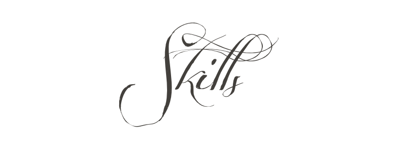

.png)
Hello! My name is Lee Vartha, a 19 year old artist, musician and student based in Nelson, New Zealand.
I am currently working towards a Bachelor of Information Technology and am working towards a career in the IT industry,
as well as continuing with my expertise in the Arts.
Hello! My name is Lee Vartha, a 19 year old artist, musician and student based in Nelson, New Zealand.
I am currently working towards a Bachelor of Information Technology and am working towards a career in the IT industry,
as well as continuing with my expertise in the Arts.
My work with the arts has been recognized with awards such as:
The 'Rainey Cup of Original Music Composition' in Highschool
The prize for 'Outstanding Involvement in the Arts' in Highschool.
As a musician, my stage name is Jinksy Crow and I have been seen going around Nelson performing my usual gigs at bars and some cafes.
2017-2022 - Nelson College for Girls
2023-2025 - Nelson Marlborough Institute of Technology
- Level 2 NCEA with Excellence Endorsement
- Level 3 NCEA with Merit Endorsement
- Level 3 NCEA University Entrance
- Year 13 Art Design with Achieved Endorsement
- Year 13 Photography with Achieved Endorsement
- Year 13 Digital Technologies with Achieved Endorsement
- Bachelor of Information Technology [2023-2025]
- Nelson Junior Orchestra [For Cello]
- Nelson Senior Orchestra [For Cello]
- NCG String Orchestra - Archi Con Legni
- NCG Choir

- Year 12 - Rainey Cup for Original Music Composition
This was because I had shown contribution in my music class by constantly creating my own original compositions.
The school mustve recognised that.
- Year 12 - Service Colours Music
This is from the fact that I had contributed in school orchestra and choir, alongside being in the music class.
This is just an acknowledgement of such.
- Scholarship Awards - Nelson Marlborough Institute of Technology Student Award
This let me gain $1000 towards my course fees!
- Special Awards - Prize for Outstanding Involvement in the Arts
This was judged by the school- they saw that I had taken music, art design, art printmaking and photography class,
along with doing the orchestra, choir, string orchestra etc
(as well as the contribution towards multiple music competitions)
- Year 13 - Service Colours Music
Once again, just like last year, it was another acknowledgement that I had taken contribution towards multiple musical groups.
- Year 13 Subject Prize - First Place - Practical Art Printmaking
Showed I was top of the class for printmaking!
They said I wouldve done the same in Music class but I had already gotten many trophies and awards for that.
- Smokefree Rockquest - 1st Place Regionals / Solo
This was my first year of competitions, I had just gotten my first electric guitar on my 16th and I had only started making songs (entered 2 weeks after)
I got 1st place!!
From this, I had gotten some further recognition and got asked to be interviewed and to give a live performance by a local Nelson radio station, The Breeze (I am seen on their facebook page).
https://www.facebook.com/watch/?v=3366371103413475
I also got on the Nelson Newspaper, got a website feature from Nelson Weekly, and I am featured on the wall of Nelsons, "The Rock Shop".
https://nelsonweekly.co.nz/2020/07/solo-success-for-nelson-teen/
- Smokefree Rockquest - 1st Place Regionals / Duo
Second year doing competitions, I joined up with my friend and we named our duo, "MOTH - Malfunction of the Heart".
We made our first song a week before we had to perform and miraculously, we got first place!! This was pretty exciting
- Smokefree Rockquest - 1st Place Regionals / Solo
Once again, third year in a row, I got first place! This was an online submission this time.
- Take the Mic - Top 30 Finalist
I put myself into another competition to get onto a TV show!!
I only got into the Top 30, but this was still amazing because it was a national thing!!
So although I didn't get too far, I still got an email asking if I can still be featured on the TV show!!
So, on Take the Mic's first episode, I was the first person featured!! (Only for a minute.)
 


- Can play up to 7 instruments [Piano, Cello, Guitar, Bass, Ukelele, Harp + Vocal]
- Gained an ABRSM Grade 2 exam result of Distinction for Cello in 2019
- Can create traditional and digital artwork
- Can create original compositions
- Has skills in sewing and crafting
- Has been of assistance for a Nelson Junior Orchestra
- Understanding of Music Programs such as Sibelius 7, Logic Pro X and Garageband
- Has some experience in Medical First Aid Training
- Can assemble and disassemble a PC with efficiency
- Understanding of UI Software such as Figma and Photoshop
- Understanding of Digital Tech Programs such as Blender, Nomad, Unity and Visual Studio Code
- Very new understanding of HTML, CSS and Javascript
In this, I showcase images depicting the nature of the cello, envisioning it in architecture and how it interacts with shadow and light in its state.


In this, we visualise the use of other objects and their projection of shadows and how it interacts with the cello.


The theme of this portfolio encompasses the idea of 'coming out of your shell'.
We can see the girls' journey of breaking out of her comfort zone and becoming more comfortable with herself and the outside world.
In the story, we see that she feels unhealthily comfortable with herself, sheltering her from new opportunities. Once she breaks out of her shell, she is able to see her life in a new light.


Compositionally, the theme of this is directed towards vulnerability and demise.
The state of demise is a soft state that is often underlooked or shunned upon, however its important to realise the inevitablity of it.
Conveying this idea towards birds show a more compositionally inclined message as the idea of birds face their sense of survival everyday.

This is an EP.
Here, theres a small range from compositional creations to digital instrumentation..
Of course, these are only samples of what are featured.
More coming out soon!
The Journey
Designed in 2022 by Jinksy Crow
Chrysalis
Designed in 2022 by Jinksy Crow


In this, I showcase images depicting the nature of the cello, envisioning it in architecture and how it interacts with shadow and light in its state.
In this, we visualise the use of other objects and their projection of shadows and how it interacts with the cello.

Every moon, I had waited for a presence like yours;
For you are the stars that light up the devoid of eternity.
There came a day where the suns rays fell into its routine and became blurred within the path of your presence;
As you are the light that outshone the sun.
I am grateful;
As I am part of this reincarnation of this universe
That fell in place where I am with you
Of all the lives I could've lived
Out of all the possibilities
You fell within my lines of chance
Holding me as I take every waking breath.
Even with that slowing probability that every rise could be my last fall
I choose to spend it all with you; knowing my last thought is about a masterpiece of creation.
As I intertwine my fingers with yours
Connect the dots and entertwine my pathways with yours
With every door that opened
Every opportunity that closed
We crossed over and met in an eclipse
In perfect serenity and serendipity
So while time is going at once, I live it through
And I am glad it is spent staying by your side with you.
2023
What do you see in me?
In you, I see a world of possibilities
I see a tapestry woven from the stars
I glimpse upon the constellations in your veins,
The galaxies painted within your eyes.
You're the refreshing dawn, breathing life into every corner you touch.
But what am I?
As I stand in your shadow, you radiate like the sun, illuminating my world.
I am the tranquil darkness, mirroring the moon's glow above.
You, the stars that sprinkle the fabric of the night, awakening fascination in life's obscurity.
You are the very air I breathe, the very essence of my being.
Though we are opposite, this duality we embody is what makes us whole.
Just as yin finds its match in yang, and light twirls in step with shadow
Our souls shall merge in syncrony.
We can mirror the warmth of the sun, and the calm of the moon.
We can be the stars that light up the night, and the darkness that soothes the day.
As you are the euphoric reverie that I can't help but fall into.
The veil of mystery that I can't help but unravel.
The guilded aurora, emboldened by stardust and moonlight.
I know exactly what I see in you.. but what reflection takes shape in your gaze when it falls upon me?
2022
In the dark space of my mind
A place with no concept of time
my apathy,
worn over me like a veil,
sheltering me from life and bright colours
The light of daybreak behind closed shelter
Thin shelled enclosure
The armour that divide us
It's rays try to reach inside
Try to spread my wings and lift me up outside
With the desperate attempts to enter my mind
I take a deep breath and let it happen
I soften my strained emotions
I let my vulnerability breathe
Golden rays stream through the cracks of my frame, announcing its welcome return
It's glowing complexion brings light to the dark
And threads of gold entwine in my soul
The warmth pulls me up from the nest that formed around me
The home with a hollowed out husk
Unshelled from the weeks of being in fetal position
Protected
I part ways with my part self
I rise to my state of rebirth
And I open the windows to the world outside
A breath of fresh air restoring my lungs
Airing out built-up dust inside to feel clearer and young.
I look with new eyes
Directing light through my gaze
casting optimism
seeing things from a different angle.
2022

This song is about bittersweet reminisce of the past.
This is about remembering the times with someone that has moved on when you havent- knowing that one day theyre bound to go, but scared of it becoming a reality.
Understanding that nothing lasts forever,, so you should enjoy the time you have with them while you can.
Lyrics:
Verse I:
You're moving forward, but I am staying behind
Hold onto the memory that I know has passed.
Not able to go back in time to have better things to say.. to feel the same way.
Pre-chorus:
In this hour, in this minute.. in this second, in this day
I wont forget the memories we had... while we had the light in our eyes
Chorus:
I was afraid.. that in due time
That our connection would loosen- the ties will be frayed.
The fact that our eyes wont open- our breath cant be retained...
But to exist isn't merely to die- it's to live and to live is to try and be alive...
So please.. hold me my love. x2
Verse II:
You're moving forward, but I am staying behind
Not over the way I feel- running out of time.
Wanting to hold back, wanting to stay here..
In the past thats.. passed.
Chorus:
I was afraid.. that in due time
That our connection would loosen- the ties will be frayed.
The fact that our eyes wont open- our breath cant be retained...
But to exist isn't merely to die- it's to live and to live is to try and be alive...
So please.. hold me my love. x2
Bridge:
The numbers of our lives only exist to go up
But our time goes down with it
Sentience is futile since it is limited
But we're given what we deserve
Pre-chorus:
In this hour, in this minute.. in this second, in this day
I wont forget the memories we had... while we had the light in our eyes
I wont forget the memories we had... while we had the light in our eyes
Chorus:
I was afraid.. that in due time
That our connection would loosen- the ties will be frayed.
The fact that our eyes wont open- our breath cant be retained...
But to exist isn't merely to die- it's to live and to live is to try and be alive...
So please.. hold me my love. x2
Verse II:
You're moving forward, but I am staying behind
Not over the way I feel- running out of time.
Wanting to hold back, wanting to stay here..
In the past thats.. passed.
Chorus:
I was afraid.. that in due time
That our connection would loosen- the ties will be frayed.
The fact that our eyes wont open- our breath cant be retained...
But to exist isn't merely to die- it's to live and to live is to try and be alive...
So please.. hold me my love. x2
Bridge:
The numbers of our lives only exist to go up
But our time goes down with it
Sentience is futile since it is limited
But we're given what we deserve
Pre-chorus:
In this hour, in this minute.. in this second, in this day
I wont forget the memories we had... while we had the light in our eyes
Not over the way I feel- running out of time.
Wanting to hold back, wanting to stay here..
In the past thats.. passed.
Chorus:
I was afraid.. that in due time
That our connection would loosen- the ties will be frayed.
The fact that our eyes wont open- our breath cant be retained...
But to exist isn't merely to die- it's to live and to live is to try and be alive...
So please.. hold me my love. x2
Bridge:
The numbers of our lives only exist to go up
But our time goes down with it
Sentience is futile since it is limited
But we're given what we deserve
Pre-chorus:
In this hour, in this minute.. in this second, in this day
I wont forget the memories we had... while we had the light in our eyes
But our time goes down with it
Sentience is futile since it is limited
But we're given what we deserve
Pre-chorus:
In this hour, in this minute.. in this second, in this day
I wont forget the memories we had... while we had the light in our eyes
Dusk is about performing. Before I perform, I always feel anxious and feel worried I would mess up or embarrass myself.
Though as I go, I learn that the audience shouldn't be seen as a scary thing but rather a comforting thing.
I talk about thunder because I am actually afraid of thunderstorms; however, in this case, I am using the way I feel about thunder as the way I feel about crowds.
I am afraid of crowds, but I am also excited to perform for them. Sometimes it's a rush; it shows power, growth, intensity.
So even though the crowd is daunting, it makes me feel alive and real.
I mention how the audience claps' are like thunder. There's been times I had been in an echoey room and hearing the rolling of applaud is like the rolling of thunder.
As well as this, I mention a lot about rain; usually rain coming is seen as a bad thing; and how I use that thought is towards the relation of my thoughts,, building up any otherthinking feelings
When in actual fact, I remember that rain makes me happy.
So, Dusk is about the relation between us and nature; its a symbol of renewal, our feelings are valid, we are not alone.
Lyrics:
Verse I:
As much as I get so nervous..
To make a mistake of myself..
The rain seems to always be there
When I take my first step.
Verse II:
Rainclouds of emotion
It's frightning- but exciting..
The rush gives a sense of life
A breathing motion...
Chorus:
The sound of thunder
As I say my words
Come and they go
Only if im heard...
The sounds I play as 'Jinksy Crow'
...its night time, its my time
I'm here to perform all
At dusk.. oh dusk, it is mine.
Verse III:
Serenades of melody
Portrayed into motion and played to the rain..
The sound of thunder is here...
The rain and claps gives me comfort..
Verse IV:
Rainclouds of emotion
It's frightning- but exciting..
The rush gives a sense of life
A breathing motion...
Chorus:
The sound of thunder
As I say my words
Come and they go
Only if im heard...
The sounds I play as 'Jinksy Crow'
...its night time, its my time
I'm here to perform all
At dusk.. oh dusk, it is mine.
Bridge:
It all sounds loud.. perhaps im overwhelmed
Just play to the clouds,, my emotion in my hands and words...
...its night time, its my time
I'm here to perform all
At dusk.. oh dusk, it is mine.. 'cuz I play as 'Jinksy Crow'.
It's frightning- but exciting..
The rush gives a sense of life
A breathing motion...
As I say my words
Come and they go
Only if im heard...
The sounds I play as 'Jinksy Crow'
...its night time, its my time
I'm here to perform all
At dusk.. oh dusk, it is mine.
Verse III:
Serenades of melody
Portrayed into motion and played to the rain..
The sound of thunder is here...
The rain and claps gives me comfort..
Verse IV:
Rainclouds of emotion
It's frightning- but exciting..
The rush gives a sense of life
A breathing motion...
Chorus:
The sound of thunder
As I say my words
Come and they go
Only if im heard...
The sounds I play as 'Jinksy Crow'
...its night time, its my time
I'm here to perform all
At dusk.. oh dusk, it is mine.
Bridge:
It all sounds loud.. perhaps im overwhelmed
Just play to the clouds,, my emotion in my hands and words...
...its night time, its my time
I'm here to perform all
At dusk.. oh dusk, it is mine.. 'cuz I play as 'Jinksy Crow'.
It's frightning- but exciting..
The rush gives a sense of life
A breathing motion...
As I say my words
Come and they go
Only if im heard...
The sounds I play as 'Jinksy Crow'
...its night time, its my time
I'm here to perform all
At dusk.. oh dusk, it is mine.
Bridge:
It all sounds loud.. perhaps im overwhelmed
Just play to the clouds,, my emotion in my hands and words...
...its night time, its my time
I'm here to perform all
At dusk.. oh dusk, it is mine.. 'cuz I play as 'Jinksy Crow'.
This song is based on 'The Journey' Art and Poetry.
Lyrics:
Verse I:
A new identity
Will rise beyond what used to be
Crawl out from the metal carcass
Leave behind the time.. that used to have the old me
Verse II:
Fall into the new light
Out of the darkness within
Find yourself a purpose
Let your life begin
Verse III:
An unborn entity
One only dreamed of
Thoughts beyond any matter
As we dive into a new chapter
Verse IV:
The new me knew the old me
Understood it wasn't meant to be
I had to leave the weighted past behind
Grow new wings and learn to fly
Out of the darkness within
Find yourself a purpose
Let your life begin
One only dreamed of
Thoughts beyond any matter
As we dive into a new chapter
Verse IV:
The new me knew the old me
Understood it wasn't meant to be
I had to leave the weighted past behind
Grow new wings and learn to fly

The theme of this portfolio encompasses the idea of 'coming out of your shell'.
We can see the girls' journey of breaking out of their comfort zone and becoming more comfortable with themselves and the outside world.
In the story, we see that she feels unhealthily comfortable with herself, sheltering her from new opportunities. Once she breaks out of her shell, she is able to see her life in a new light.
Compositionally, the theme of this is directed towards vulnerability and demise.
The state of demise is a soft state that is often underlooked or shunned upon, however its important to realise the inevitablity of it.
Conveying this idea towards birds show a more compositionally inclined message as the idea of birds face their sense of survival everyday.